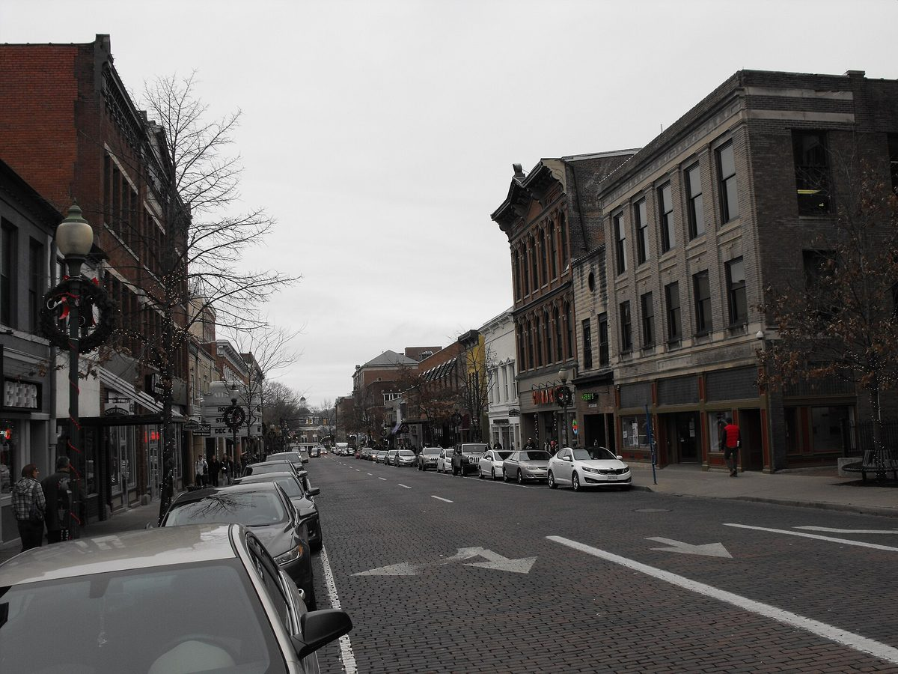

미국 오하이오 애선스, 주민투표로 전기요금에 붙인 탄소 요금으로 해마다 약 10만 달러 모아 공공 태양광

2018년 도입, 보통 가구 월 2달러가 안 되는 부담…원하지 않으면 빠질 수 있지만 대부분 남아, 옛 무기고 태양광·공공수영장 변압기 교체에 써
미국 오하이오주 애선스(Athens) 시가 2018년 주민투표로 전기요금에 얹은 '탄소 요금'으로 해마다 약 10만 달러를 모아 시 건물과 공공 부지의 태양광 사업에 쓰고 있다. 탄소 요금은 전기요금을 조금 올려 그 차액을 태양광 기금으로 돌리는 방식으로, 보통 가구 기준 부담은 한 달 2달러가 안 된다. 내고 싶지 않은 주민은 빠질 수 있지만 대부분은 그대로 남아 있다. 시는 이 돈으로 역사적 건물인 옛 무기고에 태양광을 달고 공공 수영장 태양광 설비의 변압기를 바꾸는 등 여러 사업을 벌였으며, 시가 쓰는 전기를 직접 만들면서 전기료로 나가는 세금과 탄소 배출을 함께 줄이고 있다. 스티브 패터슨(Steve Patterson) 시장은 당시 투표한 시민의 4분의 3이 태양광을 늘리는 데 한 달 1.80달러를 더 내겠다고 찬성했다며, 시의 태양광 사업을 반기는 주민들의 말을 늘 듣는다고 말했다.
시민에너지 관점
미국 콜로라도주 볼더는 2006년 주민투표로 전기 사용량에 매기는 기후행동계획세를 도입해 미국 첫 지방 탄소세로 알려졌고, 애선스는 그보다 작은 도시에서 그 돈의 쓰임을 공공 태양광 하나로 묶었다. 요금을 올리면 주민이 등을 돌린다는 걱정이 흔하지만, 한 달 2달러가 안 되는 부담에 빠질 권리까지 열어 두었는데도 대부분이 남았다는 것은 쓰임이 눈에 보이면 주민이 기꺼이 지갑을 연다는 뜻으로 보인다. 주민이 낸 돈으로 지은 설비는 시민 모두의 공공 자산으로 남고, 아낀 전기료는 다시 지역 예산으로 돌아오니 주민은 요금을 낸 손님이 아니라 발전소를 함께 세운 주인이 된다. 우리 지자체도 기후기금을 위에서 정해 걷기보다, 주민이 액수와 쓰임을 직접 정하고 공공건물 태양광으로 결과를 보여 주는 방식부터 시작해야 한다.
출처: Yale Climate Connections 2026-11-03 YCC Team (취재 Ethan Freedman) 원문 보기
米オハイオ州アセンズ、住民投票で電気料金に上乗せした炭素料金で毎年約10万ドルを集め公共太陽光に
2018年導入、平均的な世帯の負担は月2ドル未満…望まなければ抜けられるが大半が残り、旧兵器庫の太陽光や公共プールの変圧器交換に充てる
米オハイオ州アセンズ（Athens）市が、2018年の住民投票で電気料金に上乗せした「炭素料金」で毎年約10万ドルを集め、市の建物や公共用地の太陽光事業に充てている。炭素料金は電気料金を少し引き上げ、その分を太陽光の基金に回す仕組みで、平均的な世帯の負担は月2ドルに満たない。払いたくない住民は抜けることができるが、大半はそのまま残っている。市はこの資金で歴史的建造物である旧兵器庫に太陽光を設置し、公共プールの太陽光設備の変圧器を交換するなど様々な事業を行い、市が使う電力を自ら作ることで、電気代に充てる税金と炭素排出をともに減らしている。スティーブ・パターソン（Steve Patterson）市長は、当時投票した市民の4分の3が太陽光を増やすために月1.80ドル多く払うことに賛成したとし、市の太陽光事業を歓迎する住民の声をいつも耳にすると語った。
市民エネルギーの視点
米コロラド州ボルダーは2006年の住民投票で電力使用量に課す気候行動計画税を導入し、米国初の地方炭素税として知られるが、アセンズはより小さな市で、その資金の使い道を公共太陽光ひとつに絞った。料金を上げれば住民が離れるという懸念はよく聞かれるが、月2ドル未満の負担に抜ける権利まで用意しても大半が残ったことは、使い道が目に見えれば住民は進んで財布を開くということを示しているとみられる。住民が払ったお金で建てた設備は市民全員の公共資産として残り、浮いた電気代は再び地域の予算に戻るため、住民は料金を払う客ではなく、発電所を共に建てた持ち主になる。韓国の自治体も、気候基金を上から決めて集めるのではなく、住民が金額と使い道を自ら決め、公共建物の太陽光で成果を示すやり方から始めるべきだ。
出典: Yale Climate Connections 2026-11-03 YCC Team（取材 Ethan Freedman） 原文を読む
美国俄亥俄州雅典市通过公投在电费中加收碳费，每年筹集约10万美元建设公共光伏
2018年开征，普通家庭每月负担不到2美元…不愿缴纳者可退出但多数留下，用于旧军械库光伏和公共游泳池变压器更换
美国俄亥俄州雅典市（Athens）通过2018年公投在电费中加收"碳费"，每年筹集约10万美元，用于市政建筑和公共用地的光伏项目。碳费的做法是小幅提高电价，把差额转入光伏基金，普通家庭每月负担不到2美元。不愿缴纳的居民可以选择退出，但大多数人都留了下来。市政府用这笔钱为历史建筑旧军械库安装了光伏，更换了公共游泳池光伏设施的变压器，还开展了其他项目；通过自己发电，市里既减少了用于电费的税款，也减少了碳排放。市长史蒂夫·帕特森（Steve Patterson）说，当时参加投票的市民中有四分之三赞成每月多付1.80美元来增加光伏，他经常听到居民称赞市里的光伏项目。
市民能源视角
美国科罗拉多州博尔德在2006年通过公投开征按用电量计税的气候行动计划税，被视为美国首个地方碳税；雅典市则在更小的城市里，把这笔钱的用途集中到公共光伏上。常有人担心涨价会让居民反感，但每月不到2美元的负担、再加上可以退出的权利，多数人仍然留下，这说明只要用途看得见，居民愿意掏钱。居民出钱建成的设施作为全体市民的公共资产留存下来，省下的电费又回到地方预算，居民因此不是交费的顾客，而是共同建起电站的主人。韩国地方政府也不应自上而下决定并征收气候基金，而应从让居民自己决定金额和用途、用公共建筑光伏展示成果的方式做起。
来源: Yale Climate Connections 2026-11-03 YCC Team（采访 Ethan Freedman） 查看原文
Athens, Ohio, raises about $100,000 a year for public solar through a carbon fee voters added to their electricity bills
Adopted in 2018, it costs the average household less than $2 a month; residents can opt out but most stay in, and the money has gone to solar on the old armory and a transformer upgrade at a public pool
The city of Athens, Ohio, collects about $100,000 a year through a carbon fee that voters added to their electricity bills in 2018, and spends it on solar projects on city buildings and other public sites. The fee works as a small increase in the electricity rate whose proceeds go to solar, and it costs the average household less than $2 a month. Residents who do not want to pay can opt out, but most have stayed in. With the money the city has put solar on its historic armory, upgraded the transformer for a solar array at a public pool and funded other projects, and by generating its own power it is cutting both the tax money spent on electricity and its carbon emissions. Mayor Steve Patterson said three-quarters of the citizens who voted in that election agreed to pay an extra $1.80 a month for more solar, and that he constantly hears from residents who welcome the city's solar work.
Citizen Energy View
Boulder, Colorado, adopted a Climate Action Plan tax on electricity use by popular vote in 2006 and is known for the first municipal carbon tax in the United States; Athens, a smaller city, has tied its fee to a single visible purpose, public solar. A common worry is that raising bills will turn residents away, yet with a burden of less than $2 a month and the right to opt out, most have stayed, which suggests people will willingly pay when they can see where the money goes. The panels their money builds remain public assets owned by all citizens, and the savings flow back into the local budget, so residents are not customers paying a surcharge but co-owners who built the power plants together. Korean local governments, too, should start not by setting climate funds from the top down but by letting residents decide the amount and use themselves and showing results with solar on public buildings.
Source: Yale Climate Connections 2026-11-03 YCC Team (reporting by Ethan Freedman) Read the original